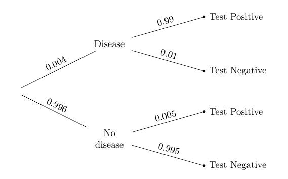
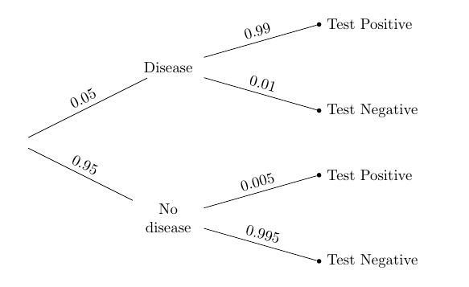

Making Decisions¶
A primary use of Bayes’ Rule is to make decisions based on incomplete information, incorporating new information as it comes in. This section points out the importance of keeping your assumptions in mind as you make decisions.
Many medical tests for diseases return Positive or Negative results. A Positive result means that according to the test, the patient has the disease. A Negative result means the test concludes that the patient doesn’t have the disease.
Medical tests are carefully designed to be very accurate. But few tests are accurate 100% of the time. Almost all tests make errors of two kinds:
A false positive is an error in which the test concludes Positive but the patient doesn’t have the disease.
A false negative is an error in which the test concludes Negative but the patient does have the disease.
These errors can affect people’s decisions. False positives can cause anxiety and unnecessary treatment (which in some cases is expensive or dangerous). False negatives can have even more serious consequences if the patient doesn’t receive treatment because of their Negative test result.
A Test for a Rare Disease¶
Suppose there is a large population and a disease that strikes a tiny proportion of the population. The tree diagram below summarizes information about such a disease and about a medical test for it.

Overall, only 4 in 1000 of the population has the disease. The test is quite accurate: it has a very small false positive rate of 5 in 1000, and a somewhat larger (though still small) false negative rate of 1 in 100.
Individuals might or might not know whether they have the disease; typically, people get tested to find out whether they have it.
So suppose a person is picked at random from the population and tested. If the test result is Positive, how would you classify them: Disease, or No disease?
We can answer this by applying Bayes’ Rule and using our “more likely than not” classifier. Given that the person has tested Positive, the chance that he or she has the disease is the proportion in the top branch, relative to the total proportion in the Test Positive branches.
(0.004 * 0.99)/(0.004 * 0.99 + 0.996*0.005 )
0.44295302013422816
Given that the person has tested Positive, the chance that he or she has the disease is about 44%. So we will classify them as: No disease.
This is a strange conclusion. We have a pretty accurate test, and a person who has tested Positive, and our classification is … that they don’t have the disease? That doesn’t seem to make any sense.
When faced with a disturbing answer, the first thing to do is to check the calculations. The arithmetic above is correct. Let’s see if we can get the same answer in a different way.
The function population returns a table of outcomes for 100,000 patients, with columns that show the True Condition and Test Result. The test is the same as the one described in the tree. But the proportion who have the disease is an argument to the function.
We will call population with 0.004 as the argument, and then pivot to cross-classify each of the 100,000 people.
population(0.004).pivot('Test Result', 'True Condition')
| True Condition | Negative | Positive |
|---|---|---|
| Disease | 4 | 396 |
| No Disease | 99102 | 498 |
The cells of the table have the right counts. For example, according to the description of the population, 4 in 1000 people have the disease. There are 100,000 people in the table, so 400 should have the disease. That’s what the table shows: 4 + 396 = 400. Of these 400, 99% get a Positive test result: 0.99 x 400 = 396.
Among the Positives, the proportion that have the disease is:
396/(396 + 498)
0.4429530201342282
That’s the answer we got by using Bayes’ Rule. The counts in the Positives column show why it is less than 1/2. Among the Positives, more people don’t have the disease than do have the disease.
The reason is that a huge fraction of the population doesn’t have the disease in the first place. The tiny fraction of those that falsely test Positive are still greater in number than the people who correctly test Positive. This is easier to visualize in the tree diagram:
The proportion of true Positives is a large fraction (0.99) of a tiny fraction (0.004) of the population.
The proportion of false Positives is a tiny fraction (0.005) of a large fraction (0.996) of the population.
These two proportions are comparable; the second is a little larger.
So, given that the randomly chosen person tested positive, we were right to classify them as more likely than not to not have the disease.
A Subjective Prior¶
Being right isn’t always satisfying. Classifying a Positive patient as not having the disease still seems somehow wrong, for such an accurate test. Since the calculations are right, let’s take a look at the basis of our probability calculation: the assumption of randomness.
Our assumption was that a randomly chosen person was tested and got a Positive result. But this doesn’t happen in reality. People go in to get tested because they think they might have the disease, or because their doctor thinks they might have the disease. People getting tested are not randomly chosen members of the population.
That is why our intuition about people getting tested was not fitting well with the answer that we got. We were imagining a realistic situation of a patient going in to get tested because there was some reason for them to do so, whereas the calculation was based on a randomly chosen person being tested.
So let’s redo our calculation under the more realistic assumption that the patient is getting tested because the doctor thinks there’s a chance the patient has the disease.
Here it’s important to note that “the doctor thinks there’s a chance” means that the chance is the doctor’s opinion, not the proportion in the population. It is called a subjective probability. In our context of whether or not the patient has the disease, it is also a subective prior probability.
Some researchers insist that all probabilities must be relative frequencies, but subjective probabilities abound. The chance that a candidate wins the next election, the chance that a big earthquake will hit the Bay Area in the next decade, the chance that a particular country wins the next soccer World Cup: none of these are based on relative frequencies or long run frequencies. Each one contains a subjective element. All calculations involving them thus have a subjective element too.
Suppose the doctor’s subjective opinion is that there is a 5% chance that the patient has the disease. Then just the prior probabilities in the tree diagram will change:

Given that the patient tests Positive, the chance that he or she has the disease is given by Bayes’ Rule.
(0.05 * 0.99)/(0.05 * 0.99 + 0.95 * 0.005)
0.9124423963133641
The effect of changing the prior is stunning. Even though the doctor has a pretty low prior probability (5%) that the patient has the disease, once the patient tests Positive the posterior probability of having the disease shoots up to more than 91%.
If the patient tests Positive, it would be reasonable for the doctor to proceed as though the patient has the disease.
Confirming the Answer¶
Though the doctor’s opinion is subjective, we can generate an artificial population in which 5% of the people have the disease and are tested using the same test. Then we can count people in different categories to see if the counts are consistent with the answer we got by using Bayes’ Rule.
We can use population(0.05) and pivot to construct the corresponding population and look at the counts in the four cells.
population(0.05).pivot('Test Result', 'True Condition')
| True Condition | Negative | Positive |
|---|---|---|
| Disease | 50 | 4950 |
| No Disease | 94525 | 475 |
In this artificially created population of 100,000 people, 5000 people (5%) have the disease, and 99% of them test Positive, leading to 4950 true Positives. Compare this with 475 false Positives: among the Positives, the proportion that have the disease is the same as what we got by Bayes’ Rule.
4950/(4950 + 475)
0.9124423963133641
Because we can generate a population that has the right proportions, we can also use simulation to confirm that our answer is reasonable. The table pop_05 contains a population of 100,000 people generated with the doctor’s prior disease probability of 5% and the error rates of the test. We take a simple random sample of size 10,000 from the population, and extract the table positive consisting only of those in the sample that had Positive test results.
pop_05 = population(0.05)
sample = pop_05.sample(10000, with_replacement=False)
positive = sample.where('Test Result', are.equal_to('Positive'))
Among these Positive results, what proportion were true Positives? That’s the proportion of Positives that had the disease:
positive.where('True Condition', are.equal_to('Disease')).num_rows/positive.num_rows
0.9218181818181819
Run the two cells a few times and you will see that the proportion of true Positives among the Positives hovers around the value of 0.912 that we calculated by Bayes’ Rule.
You can also use the population function with a different argument to change the prior disease probability and see how the posterior probabilities are affected.